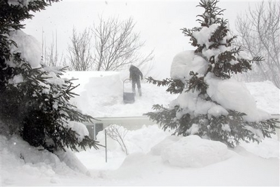

The Golden Snowball Award is a contest between 5 cities in CNY - Upstate New York. The contest is based on which city receives the most snowfall for the snow season. The cities that compete are Albany, Buffalo, Binghamton, Rochester and last years Champion, Syracuse. A trophy is awarded to the winning city every year.
Golden Snowball Totals for the 2007 - 2008 Snowfall Season
| GSB City's | This Season | Normal Average to Date | Normal Seasons Average | Last Season This Date |
|---|---|---|---|---|
| Syracuse | 83.9 | 85.1 | 111.9 | 104.5 |
| Rochester | 72.1 | 73.7 | 100.3 | 70.9 |
| Buffalo | 66.3 | 77.3 | 97 | 76.1 |
| Binghamton | 55.1 | 58.9 | 81 | 36.9 |
| Albany | 48.8 | 46.4 | 62.4 | 24.5 |
Lake-effect snow
Lake-effect snow is produced in the winter when cold, arctic winds move across long expanses of warmer lake water, providing energy and picking up water vapor which freezes and is deposited on the lee shores. The same effect over bodies of salt water is called ocean effect snow, sea effect snow, or even bay effect snow. The effect is enhanced when the moving air mass is uplifted by the orographic effect of higher elevations on the downwind shores. This uplifting can produce narrow, but very intense bands of precipitation, which deposit at a rate of many inches of snow each hour and often bringing copious snowfall totals. The areas affected by lake-effect snow are called snowbelts. This effect occurs in many locations throughout the world, but is best known in the populated areas of the Great Lakes of North America.
If the air temperature is not low enough to keep the precipitation frozen, it falls as lake-effect rain. In order for lake-effect rain or snow to form, the air moving across the lake must be significantly cooler than the surface air (which is likely to be near the temperature of the water surface). Specifically, the air temperature at the altitude where the air pressure is 850 millibars (roughly 1.5 vertical kilometers) should be 13�C lower than the temperature of the air at the surface. Lake-effect occurring when the air at 850 millibars is much colder than the water surface can produce thundersnow, snow showers accompanied by lightning and thunder (due to the larger amount of energy available from the increased instability).